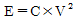
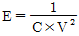
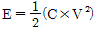
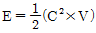
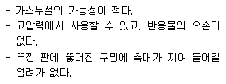
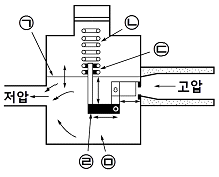

가스산업기사 (2008-03-02 기출문제)
1과목: 연소공학
1. 실제기체가 이상기체방정식을 만족하기 위한 조건은?
- 온도와 압력이 높은 경우
- 온도가 높고, 압력이 낮은 경우
- 온도가 낮고, 압력이 높은 경우
- 온도와 압력이 낮은 경우
(정답률: 87%)

2. 0.085g의 어떤 화합물을 기화시킨 결과 730mmHg, 60℃에서 23.5mL가 되었다. 이 물질의 분자량은 약 얼마인가?
- 7g/mol
- 10g/mol
- 75g/mol
- 103g/mol
(정답률: 57%)
3. 표준상태에서 고발열량(총 발열량)과 저발열량(진발열량)과의 차이는 얼마인가? (단, 표준상태에서 물의 증발잠열은 540kcal/kg이다.)
- 540kcal/kg·mol
- 1970kcal/kg·mol
- 9720kcal/kg·mol
- 15400kcal/kg·mol
(정답률: 78%)
4. 다음 중 연소속도와 가장 밀접한 관계가 있는 것은?
- 열의 발생속도
- 착화속도
- 산화속도
- 환원속도
(정답률: 81%)
5. 1기압, 20L의 공기를 4L 용기에 넣었을 때 산소의 분압은 얼마인가? (단, 압축 시 온도변화는 없고, 공기는 이상기체로 가정하며, 공기 중 산소는 20%로 가정한다.)
- 1기압
- 2기압
- 3기압
- 4기압
(정답률: 57%)
6. 수소의 연소반응식이 다음과 같을 경우 1mol의 수소를 일정한 압력에서 이론산소 량으로 완전연소시켰을 때의 온도는 약 몇 K인가? (단, 정압비열은 10cal/mol·K, 수소와 산소의 공급온도는 25℃, 외부로의 열손실은 없다.)
- 5780
- 58⑤
- 6⑤3
- 6078
(정답률: 51%)
7. 다음 중 기체연료의 일반적인 연소방식은?
- 확산연소
- 증발연소
- 분해연소
- 표면연소
(정답률: 89%)
8. 온·상압에서 가연성 가스의 폭발에 대한 일반적인 설명 중 틀린 것은?
- 폭발범위가 넓을수록 위험하다.
- 인화점이 높을수록 위험하다.
- 연소속도가 클수록 위험하다.
- 착화점이 높을수록 안전하다.
(정답률: 84%)
9. 탄소(C) 1kg을 완전연소시키는 데 필요한 산소량은 약 몇 kg인가?
- 1.667
- 1.867
- 2.667
- 3.667
(정답률: 56%)
10. 연소의 3요소가 바르게 나열된 것은?
- 가연물, 점화원, 산소
- 가연물, 산소, 이산화탄소
- 가연물, 이산화탄소, 점화원
- 수소, 점화원, 가연물
(정답률: 93%)
11. 다음 중 최소착화에너지(E)를 바르게 나타낸 것은? (단, C : 콘덴서 용량, V : 전극에 걸리는 전압이다.)




(정답률: 80%)
12. 압력 1atm, 온도 20℃에서 공기 1kg의 부피는 약 몇 m3인가? (단, 공기의 평균 분자량은 29이다.)
- 0.42
- 0.62
- 0.75
- 0.83
(정답률: 64%)
13. 다음 중 시강특성에 해당하지 않는 것은?
- 부피
- 온도
- 압력
- 몰분율
(정답률: 60%)
14. 시안화수소를 장기간 저장하지 못하게 하는 주된 이유는?
- 분해폭발을 일으키므로
- 산화폭발을 일으키므로
- 분진폭발을 일으키므로
- 중합폭발을 일으키므로
(정답률: 90%)
15. 위험의 등급을 다음과 같이 분류하였을 때 특정 결합의 위험도가 가장 큰 것은?
- 안전(安全)
- 한계성(限界性)
- 위험(危險)
- 파탄(破綻)
(정답률: 81%)
16. 산소 없이도 자기분해 폭발을 일으키는 가스가 아닌 것은?
- 프로판
- 아세틸렌
- 산화에틸렌
- 히드라진
(정답률: 72%)
17. 단원자 분자의 정적비열(Cv)에 대한 정압 비열(Cp)의 비인 비열비(k) 값은?
- 1.67
- 1.44
- 1.33
- 1.02
(정답률: 78%)
18. 위험물안전관리법상 물과 접촉하여 많은 열을 내며 연소를 돕는 금수성 물질은 제 몇 류 위험물에 해당하는가?
- 제1류
- 제3류
- 제5류
- 제6류
(정답률: 76%)
19. 가연성 물질을 공기로 연소시키는 경우 공기 중의 산소 농도를 높게 하면 어떻게 되는가?
- 연소속도는 크게 되고, 발화온도는 높게 된다.
- 연소속도는 크게 되고, 발화온도는 낮게 된다.
- 연소속도는 낮게 되고, 발화온도는 높게 된다.
- 연소속도는 낮게 되고, 발화온도는 낮게 된다.
(정답률: 81%)
20. 점화원이 될 우려가 있는 부분을 용기 안에 넣고 불활성 가스를 용기 안에 채워 넣어 폭발성 가스가 침입하는 것을 방지하는 방폭구조는?
- 압력방폭구조
- 안전증방폭구조
- 유입방폭구조
- 본질방폭구조
(정답률: 86%)
2과목: 가스설비
21. 다음의 특징을 가진 오토클레이브는?

- 교반형
- 진탕형
- 회전형
- 가스교반형
(정답률: 75%)
22. 버너의 불꽃을 감지하여 정상적인 연소 중에 불꽃이 꺼졌을 때 신속하게 가스를 차단하여 생가스 누출을 방지하는 장치로서 불꽃의 도전성에 의한 정류성을 이용하여 불꽃을 감지하는 방식으로 대용량의 연소기에 사용하는 방식의 연소안전장치는?
- 열전대식
- 플레임로드식
- 광전식
- 바이메탈식
(정답률: 75%)
23. 20층인 아파트에서 1층의 가스압력이 1.8kPa 일 때, 20층에서의 압력은 몇 kPa인가? (단, 20층까지의 고저차는 60m, 가스의 비중은 0.65, 공기의 비중량은 1.3kg/m3이다.)
- 1
- 2
- 3
- 4
(정답률: 70%)
24. 대기 중에 10m인 배관을 연결할 때 중간에 상온 스프링을 이용하여 연결하려 한다면 중간 연결부에서 얼마의 간격으로 해야 하는가? (단, 대기 중의 온도는 최저 -20℃, 최고 30℃이고, 배관의 열팽창계수는 7.2× 10 -5 /℃이다.)
- 18㎜
- 24㎜
- 36㎜
- 48㎜
(정답률: 56%)
25. 다음 중 신축이음이 아닌 것은?
- 벨로즈형 이음
- 슬리브형 이음
- 루프형 이음
- 턱걸이형 이음
(정답률: 89%)
26. 금속의 내부 응력을 제거하고 가공경화된 재료를 연화시켜 결정조직을 결정하고 상온가공을 용이하게 할 목적으로 하는 열처리는?
- 담금질
- 불림
- 풀림
- 뜨임
(정답률: 65%)
27. 저온장치에 사용되는 진공단열법이 아닌 것은?
- 단층저진공단열법
- 고진공단열법
- 분말진공단열법
- 다층진공단열법
(정답률: 62%)
28. 펌프의 흡입관에 증기가 혼입되면 일어나는 현상이 아닌 것은?
- 토출량이 감소하며, 다량일 경우 펌핑 불능이 된다.
- 펌프의 기동불능을 초래한다.
- 이상음, 압력계의 변동, 진동 등이 발생한다.
- 증기가 액화되어 펌프 효율이 개선된다.
(정답률: 85%)
29. 전기방식시설의 유지관리를 위한 전위측정용 터미널 설치의 기준으로 옳은 것은 어느 것인가?
- 희생양극법은 배관길이 500m 이내의 간격으로 설치
- 외부전원법은 배관길이 1000m 이내의 간격으로 설치
- 배류법은 배관길이 300m 이내의 간격으로 설치
- 지중에 매설되어 있는 배관 절연부 한쪽에 설치
(정답률: 76%)
30. 정압기의 특성 중 메인밸브의 열림과 유량과의 관계를 의미하는 것은?
- 정특성
- 동특성
- 유량특성
- 유속특성
(정답률: 57%)
31. LNG 수입기지에서 LNG를 NG로 전환하기 위하여 가열원을 해수로 기화시키는 방법으로 옳은 것은?
- Open Rack Vaporizer
- Submerged Conversion Vaporizer
- 냉열기화
- 중앙매체식 기화기
(정답률: 77%)
32. 외경(D)이 216.3㎜, 구경두께 5.8㎜인 200A의 배관용 탄소강관이 내압 9.9kgf/cm2을 받았을 경우에 관에 생기는 원주방향 응력은 약 몇 kgf/cm2인가?
- 88
- 175
- 263
- 351
(정답률: 59%)
33. 정압기(governor)의 기본 구성품 중 2차 압력을 감지하고, 변동사항을 알려주는 역할을 하는 것은?
- 스프링
- 메인밸브
- 다이어프램
- 공기구멍
(정답률: 89%)
34. 압축기에 의한 액화석유가스 이송 시의 장점이 아닌 것은?
- 충전시간이 대체로 짧다.
- 잔가스의 회수가 가능하다.
- 베이퍼록 현상이 생기지 않는다.
- 재액화 현상이 일어나지 않는다.
(정답률: 70%)
35. 고온에서 금속에 일정한 하중을 가하였을 때 일정한 시간이 경과하면 변형이 커지는 현상을 무엇이라고 하는가?
- 취성
- 침식
- 크리프
- 피로
(정답률: 86%)
36. 액화석유가스 20kg 용기를 재검사하기 위하여 수압에 의한 내압시험을 하였다. 이때 전 증가량이 200mL, 영구증가량이 20mL이었다면 영구증가율은 몇 %인가?
- 10
- 12.2
- 20
- 24.4
(정답률: 67%)
37. 액화석유가스 충전용 주관 압력계 등의 기능검사 주기에 대한 기준으로 옳은 것은?
- 주관 : 매월 1회 이상, 기타 : 3월에 1회 이상
- 주관 : 매주 1회 이상, 기타 : 1월에 1회 이상
- 주관 : 매월 1회 이상, 기타 : 매년 1회 이상
- 주관 : 3월에 1회 이상, 기타 : 매년 1회 이상
(정답률: 56%)
38. 다음 중 이온화경향이 가장 작은 원소는?
- K
- Fe
- Zn
- Ag
(정답률: 60%)
39. 가스의 비중에 대한 설명으로 가장 옳은 것은?
- 비중의 크기는 kg/cm2로 표시한다.
- 비중을 정하는 기준물질로 공기가 이용된다.
- 가스의 부력은 비중에 의해 정해지지 않는다.
- 비중은 기구의 염구(炎口)의 형에 의해 변화한다.
(정답률: 75%)
40. 다음 그림은 압력조정기의 기본 구조이다. 옳게 짝지어진 것은?

- ㉠ 다이어프램, ㉡ 안전장치용 스프링
- ㉡ 안전장치용 스프링, ㉢ 압력조정용 스프링
- ㉢ 압력조정용 스프링, ㉣ 레버
- ㉣ 레버, ㉤ 감압실
(정답률: 81%)
3과목: 가스안전관리
41. 가스의 배관장치에 이상상태가 발생하여 경보가 울리는 경우는?
- 배관 내의 압력이 상용압력의 1배일 때
- 긴급차단밸브가 열려있을 때
- 배관 내의 압력이 정상 시의 압력보다 10% 강하한 때
- 배관 내의 유량이 정상 시의 유량보다 10% 변동한 때
(정답률: 54%)
42. 액화가스 저장탱크에 설치하는 가스방출관은 지면에서 5m 이상 또는 그 저장탱크의 정상부로부터 몇 m 이상 높은 위치에 설치하여야 하는가?
- 1
- 2
- 3
- 4
(정답률: 70%)
43. 고압가스안전관리법 시행규칙에서 정의하는 '처리능력'이라 함은?
- 1시간에 처리할 수 있는 가스의 양이다.
- 8시간에 처리할 수 있는 가스의 양이다.
- 1일에 처리할 수 있는 가스의 양이다.
- 1년에 처리할 수 있는 가스의 양이다.
(정답률: 85%)
44. 고압가스 판매소의 시설기준에 대한 설명 중 틀린 것은?
- 용기보관실의 벽은 방호벽으로 하여야 한다.
- 충전용기의 보관실은 불연재료를 사용 한다.
- 용기보관실 및 사무실은 동일부지 안에 설치하여서는 안 된다.
- 독성 가스 용기보관실에는 중화설비와 연동되는 경보장치를 설치하여야 한다.
(정답률: 84%)
45. 다음 중 공기 중에서 위험도가 가장 높은 가스는?
- 수소
- 아세틸렌
- 에틸렌
- 일산화탄소
(정답률: 80%)
46. 기업 활동 전반을 시스템으로 보고 시스템 운영 규정을 작성 시행하여 사업장에서의 사고 예방을 위한 모든 형태의 활동 및 노력을 효과적으로 수행하기 위한 체계적이고 종합적인 안전관리체계를 의미하는 것은?
- MMS
- SMS
- CRM
- SSS
(정답률: 86%)
47. 차량에 고정된 탱크로 산소 운반 시 휴대하여야 할 분말소화제 소화기의 능력단위로 옳은 것은?(관련 규정 개정전 문제로 여기서는 기존 정답인 2번을 누르면 정답 처리됩니다. 자세한 내용은 해설을 참고하세요.)
- BC용, B-6 이상
- BC용, B-8 이상
- ABC용, B-6 이상
- ABC용, B-8 이상
(정답률: 72%)
48. 산업용 공장에서 사용한 연소기의 명판에 표시된 용량이 6000kcal/h인 경우 사용시설의 월 사용예정량(m3)은? (단, 도시가스의 월 사용예정량을 구할 때의 열량을 기준 으로 한다.)
- 50m3
- 72.6m3
- 88.9m3
- 130.9m3
(정답률: 39%)
49. LPG 저장탱크에 가스를 충전하는 때에는 가스의 용량이 상용의 온도에서 저장탱크 내용적의 몇 %를 넘지 않아야 하는가?
- 85
- 90
- 95
- 98
(정답률: 84%)
50. 냉동기를 제조하고자 하는 자는 냉동기제조의 기술기준에 의한 설비를 갖추어야 한다. 시설기준 중 검사설비에 해당하는 것은?
- 프레스설비
- 세척설비
- 구조시험설비
- 공작설비
(정답률: 61%)
51. LPG 온수가열식 기화기 운전 시에 온수의 온도는 몇 ℃ 이하를 유지하여야 하는가?
- 60
- 70
- 80
- 90
(정답률: 49%)
52. 고압가스 용기의 파열사고 주원인은 용기의 내압력(耐壓力) 부족에 기인한다. 내압력 부족의 원인으로 볼 수 없는 것은?
- 용기 내벽의 부식
- 강재의 피로
- 과잉 충전
- 용접 불량
(정답률: 83%)
53. 차량에 고정된 탱크에 의한 고압가스 운반기준에 대한 설명 중 틀린 것은?
- 가연성 가스(LPG 제외) 및 산소탱크의 내용적은 18000L를 초과하지 아니할 것
- 액화가스를 충전하는 탱크는 그 내부에 액면요동을 방지하기 위한 방파판 등을 설치할 것
- 차량의 앞, 뒤, 옆 및 지붕에 각각 검은색 글씨로 '위험 고압가스'라는 경계 표시를 할 것
- 후부취출식 탱크 외의 탱크는 후면과 차량의 뒷범퍼와의 수평거리가 30cm 이상이 되도록 탱크를 차량에 고정시킬 것
(정답률: 65%)
54. 고압가스설비의 설치에 유해한 영향을 미치는 부등침하 등의 원인 유무에 대하여 실시하는 지반조사 방법이 아닌 것은?
- 보링(boring)
- 표준관입시험
- 베인(vane)시험
- 수압시험
(정답률: 62%)
55. 메탄 90vol%, 에탄 5vol%, 프로판 5vol% 인 혼합가스의 공기 중 폭발범위는 약 몇 % 인가? (단, 메탄, 에탄, 프로판의 폭발하한은 5%, 3%, 2.1%이고, 폭발상한은 15%, 12.4%, 9.5%이다.)
- 3.5~15.6%
- 4.5~14.4%
- 5.6~12.4%
- 6.5~18.5%
(정답률: 71%)
56. 다음 가스의 치환방법으로 가장 적당한 것은?
- 아황산가스의 경우는 공기로 치환할 필요 없이 작업한다.
- 암모니아의 경우는 불활성 가스로 치환한 후 허용농도 이하가 될 때까지 치환한 후 작업한다.
- 수소의 경우는 불활성 가스로 치환한 즉시 작업한다.
- 산소의 경우는 치환할 필요도 없이 작업한다.
(정답률: 85%)
57. 다음 절대압력 중 가장 높은 압력은?
- 1kgf/cm2
- 1atm
- 100000Pa
- 10.13mH2O
(정답률: 56%)
58. 시안화수소는 충전 후 며칠이 경과되기 전에 다른 용기에 옮겨 충전하여야 하는가?
- 30일
- 45일
- 60일
- 90일
(정답률: 89%)
59. 다음 독성 가스별 제독제 및 제독제 보유량의 기준이 잘못 연결된 것은?
- 염소 : 소석회 － 620kg
- 포스겐 : 소석회 － 200kg
- 아황산가스 : 가성소다 수용액 －530kg
- 암모니아 : 물 － 다량
(정답률: 68%)
60. 다음 중 아세틸렌가스를 온도에 관계없이 2.5MPa의 압력으로 압축할 때 첨가하는 희석제가 아닌 것은?
- 질소
- 에틸렌
- 메탄
- 이산화탄소
(정답률: 68%)
4과목: 가스계측
61. 차압식 유량계에서 조리개 전·후의 압력 차가 처음보다 2배만큼 커졌다면 유량은 어떻게 변하는가? (단, Q1은 조리개 전의 유량, Q2는 조리개 후의 유량이다.)
- Q2=Q1
- Q2=2Q1
- Q2=√2·Q1
- Q2=4Q1
(정답률: 74%)
62. 가스미터의 종류 중 실측식에 해당되지 않는 것은?
- 터빈식 가스미터
- 건식 가스미터
- 습식 가스미터
- 회전식 가스미터
(정답률: 63%)
63. 정확한 계량이 가능하여 기준기로 주로 이용되는 것은?
- 막식 가스미터기
- 습식 가스미터기
- 회전자식 가스미터기
- 벤투리식 가스미터기
(정답률: 85%)
64. 1kΩ 저항에 100V의 전압이 사용되었을 때 발생하는 전력은 몇 W인가?
- 5
- 10
- 20
- 50
(정답률: 83%)
65. 측정치의 쏠림(bias)에 의하여 발생하는 오차는?
- 과오오차
- 계통오차
- 우연오차
- 상대오차
(정답률: 66%)
66. 도로에 매설된 도시가스가 누출되는 것을 감지하여 분석한 후 가스누출 유무를 알려 주는 가스검출기는?
- FID
- TCD
- FTD
- FPD
(정답률: 88%)
67. 가스미터 출구측 배관을 입상배관을 피하여 시공하는 주된 이유는?
- 설치면적을 줄일 수 있다.
- 배관의 길이를 줄일 수 있다.
- 검침 및 수리 등의 작업이 편리하다.
- 가스미터 내 밸브의 동결을 방지할 수 있다.
(정답률: 88%)
68. 다음 중 비례제어(P동작)에 대한 설명으로 가장 옳은 것은?
- 비례대의 폭을 좁히는 등 오프셋은 극히 작게 된다.
- 조작량은 제어편차의 변화속도에 비례한 제어동작이다.
- 제어편차와 지속시간에 비례하는 속도로 조작량을 변화시킨 제어조작이다.
- 비례대의 폭을 넓히는 등 제어동작이 작동할 때는 비례동작이 강하게 되며, 피드백제어로 되먹임 된다.
(정답률: 61%)
69. 가스 크로마토그래피의 검출기가 갖추어야할 구비조건으로 틀린 것은?
- 감도가 낮을 것
- 재현성이 좋을 것
- 시료에 대하여 선형적으로 감응할 것
- 시료를 파괴하지 않을 것
(정답률: 86%)
70. 고압가스가 누출되어 폭발사고가 발생하였다. 이 사고의 원인으로 볼 수 없는 것은?
- 고압가스가 가연성이었다.
- 고압가스 용기주변에 산소의 농도가 높았다.
- 가스의 분자가 염소와 불소를 많이 포함하고 있었다.
- 고압가스 용기의 압력이 높았다.
(정답률: 79%)
71. 다음 중 탐사침을 액중에 넣어 검출되는 물질의 유전율을 이용하는 액면계는?
- 정전용량형 액면계
- 초음파식 액면계
- 방사선식 액면계
- 전극식 액면계
(정답률: 73%)
72. 다음 중 아르키메데스의 원리를 이용하는 압력계는?
- 부르돈관 압력계
- 링밸런스식 압력계
- 침종식 압력계
- 벨로즈식 압력계
(정답률: 79%)
73. 가스 크로마토그래피 분석기 중 FID 검출기와 직접적인 관련이 있는 기체는?
- N2
- CO
- H2
- He
(정답률: 49%)
74. 자동제어장치의 구성요소 중 기준압력과주 피드백량과의 차를 구하는 부분으로서 제어량의 현재 값이 목표치와 얼마만큼 차이가 나는가를 판단하는 기구는?
- 검출부
- 비교부
- 조절부
- 조작부
(정답률: 67%)
75. 가스분석법 중 흡수분석법에 해당하지 않는 것은?
- 헴펠법
- 산화구리법
- 오르자트법
- 게겔법
(정답률: 79%)
76. 압력계의 눈금이 1.2MPa을 나타내고 있으며, 대기압이 750mmHg일 때 절대압력은약 몇 kPa인가?
- 1000
- 1100
- 1200
- 1300
(정답률: 41%)
77. 다음 중 기기분석법이 아닌 것은?
- Chromatography
- Iodometery
- Colorimetery
- Polarography
(정답률: 71%)
78. 열전대 온도계의 구성 요소에 해당하지 않는 것은?
- 보호관
- 열전대
- 보상도선
- 저항체 소자
(정답률: 66%)
79. 염소(Cl2) 가스 누출 시 검지하는 가장 적당한 시험지는?
- KI-전분지
- 초산벤지딘지
- 염화제일구리 착염지
- 연당지
(정답률: 83%)
80. 열전대 온도계 중 고온측정 시에 안정성이 좋으나 환원성 분위기에 약하고 금속증기에 침식되기 쉬운 온도계는?
- 철-콘스탄탄
- 백금-백금·로듐
- 크로멜-알루멜
- 구리-콘스탄탄
(정답률: 57%)
하지만, 온도가 높고 압력이 낮은 경우에는 기체 분자들이 빠르게 움직이고, 서로간의 상호작용이 적기 때문에 이상기체방정식이 상대적으로 더 잘 적용된다. 따라서 이러한 조건에서는 이상기체방정식을 사용하여 기체의 상태를 예측하는 것이 더욱 정확하다.